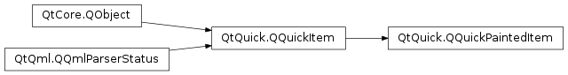

QQuickPaintedItem¶
Synopsis¶
Functions¶
- def
contentsBoundingRect() - def
contentsScale() - def
contentsSize() - def
fillColor() - def
mipmap() - def
opaquePainting() - def
performanceHints() - def
renderTarget() - def
resetContentsSize() - def
setContentsScale(arg__1) - def
setContentsSize(arg__1) - def
setFillColor(arg__1) - def
setMipmap(enable) - def
setOpaquePainting(opaque) - def
setPerformanceHint(hint[, enabled=true]) - def
setPerformanceHints(hints) - def
setRenderTarget(target) - def
setTextureSize(size) - def
textureSize() - def
update([rect=QRect()])
Signals¶
- def
contentsScaleChanged() - def
contentsSizeChanged() - def
fillColorChanged() - def
renderTargetChanged() - def
textureSizeChanged()
Detailed Description¶
The
PySide2.QtQuick.QQuickPaintedItemclass provides a way to use thePySide2.QtGui.QPainterAPI in the QML Scene Graph.The
PySide2.QtQuick.QQuickPaintedItemmakes it possible to use thePySide2.QtGui.QPainterAPI with the QML Scene Graph. It sets up a textured rectangle in the Scene Graph and uses aPySide2.QtGui.QPainterto paint onto the texture. The render target can be either aPySide2.QtGui.QImageor, when OpenGL is in use, aPySide2.QtGui.QOpenGLFramebufferObject. When the render target is aPySide2.QtGui.QImage,PySide2.QtGui.QPainterfirst renders into the image then the content is uploaded to the texture. When aPySide2.QtGui.QOpenGLFramebufferObjectis used,PySide2.QtGui.QPainterpaints directly onto the texture. CallPySide2.QtQuick.QQuickPaintedItem.update()to trigger a repaint.To enable
PySide2.QtGui.QPainterto do anti-aliased rendering, usePySide2.QtQuick.QQuickPaintedItem.setAntialiasing().To write your own painted item, you first create a subclass of
PySide2.QtQuick.QQuickPaintedItem, and then start by implementing its only pure virtual public function:PySide2.QtQuick.QQuickPaintedItem.paint(), which implements the actual painting. The painting will be inside the rectangle spanning from 0,0 toPySide2.QtQuick.QQuickItem.width(),PySide2.QtQuick.QQuickItem.height().Note
It important to understand the performance implications such items can incur. See
QQuickPaintedItem.RenderTargetandQQuickPaintedItem.renderTarget.
-
class
PySide2.QtQuick.QQuickPaintedItem([parent=nullptr])¶ Parameters: parent – PySide2.QtQuick.QQuickItemConstructs a
PySide2.QtQuick.QQuickPaintedItemwith the givenparentitem.
-
PySide2.QtQuick.QQuickPaintedItem.RenderTarget¶ This enum describes
PySide2.QtQuick.QQuickPaintedItem‘s render targets. The render target is the surfacePySide2.QtGui.QPainterpaints onto before the item is rendered on screen.Constant Description QQuickPaintedItem.Image The default; PySide2.QtGui.QPainterpaints into aPySide2.QtGui.QImageusing the raster paint engine. The image’s content needs to be uploaded to graphics memory afterward, this operation can potentially be slow if the item is large. This render target allows high quality anti-aliasing and fast item resizing.QQuickPaintedItem.FramebufferObject PySide2.QtGui.QPainterpaints into aPySide2.QtGui.QOpenGLFramebufferObjectusing the GL paint engine. Painting can be faster as no texture upload is required, but anti-aliasing quality is not as good as if using an image. This render target allows faster rendering in some cases, but you should avoid using it if the item is resized often.QQuickPaintedItem.InvertedYFramebufferObject Exactly as for above, except once the painting is done, prior to rendering the painted image is flipped about the x-axis so that the top-most pixels are now at the bottom. Since this is done with the OpenGL texture coordinates it is a much faster way to achieve this effect than using a painter transform.
-
PySide2.QtQuick.QQuickPaintedItem.PerformanceHint¶ This enum describes flags that you can enable to improve rendering performance in
PySide2.QtQuick.QQuickPaintedItem. By default, none of these flags are set.Constant Description QQuickPaintedItem.FastFBOResizing Resizing an FBO can be a costly operation on a few OpenGL driver implementations. To work around this, one can set this flag to let the PySide2.QtQuick.QQuickPaintedItemallocate one large framebuffer object and instead draw into a subregion of it. This saves the resize at the cost of using more memory. Please note that this is not a common problem.
-
PySide2.QtQuick.QQuickPaintedItem.contentsBoundingRect()¶ Return type: PySide2.QtCore.QRectFThis function is provided for compatibility, use size in combination with
PySide2.QtQuick.QQuickPaintedItem.textureSize()to decide the size of what you are drawing.
-
PySide2.QtQuick.QQuickPaintedItem.contentsScale()¶ Return type: PySide2.QtCore.qreal
-
PySide2.QtQuick.QQuickPaintedItem.contentsScaleChanged()¶
-
PySide2.QtQuick.QQuickPaintedItem.contentsSize()¶ Return type: PySide2.QtCore.QSize
-
PySide2.QtQuick.QQuickPaintedItem.contentsSizeChanged()¶
-
PySide2.QtQuick.QQuickPaintedItem.fillColor()¶ Return type: PySide2.QtGui.QColor
-
PySide2.QtQuick.QQuickPaintedItem.fillColorChanged()¶
-
PySide2.QtQuick.QQuickPaintedItem.mipmap()¶ Return type: PySide2.QtCore.boolReturns true if mipmaps are enabled; otherwise, false is returned.
By default, mipmapping is not enabled.
-
PySide2.QtQuick.QQuickPaintedItem.opaquePainting()¶ Return type: PySide2.QtCore.boolReturns true if this item is opaque; otherwise, false is returned.
By default, painted items are not opaque.
-
PySide2.QtQuick.QQuickPaintedItem.paint(painter)¶ Parameters: painter – PySide2.QtGui.QPainterThis function, which is usually called by the QML Scene Graph, paints the contents of an item in local coordinates.
The underlying texture will have a size defined by
PySide2.QtQuick.QQuickPaintedItem.textureSize()when set, or the item’s size, multiplied by the window’s device pixel ratio.The function is called after the item has been filled with the
PySide2.QtQuick.QQuickPaintedItem.fillColor().Reimplement this function in a
PySide2.QtQuick.QQuickPaintedItemsubclass to provide the item’s painting implementation, usingpainter.Note
The QML Scene Graph uses two separate threads, the main thread does things such as processing events or updating animations while a second thread does the actual OpenGL rendering. As a consequence, is not called from the main GUI thread but from the GL enabled renderer thread. At the moment is called, the GUI thread is blocked and this is therefore thread-safe.
Warning
Extreme caution must be used when creating QObjects, emitting signals, starting timers and similar inside this function as these will have affinity to the rendering thread.
-
PySide2.QtQuick.QQuickPaintedItem.performanceHints()¶ Return type: PySide2.QtQuick.QQuickPaintedItem.PerformanceHintsReturns the performance hints.
By default, no performance hint is enabled.
-
PySide2.QtQuick.QQuickPaintedItem.renderTarget()¶ Return type: PySide2.QtQuick.QQuickPaintedItem.RenderTarget
-
PySide2.QtQuick.QQuickPaintedItem.renderTargetChanged()¶
-
PySide2.QtQuick.QQuickPaintedItem.resetContentsSize()¶ This convenience function is equivalent to calling
PySide2.QtQuick.QQuickPaintedItem.setContentsSize()(QSize()).
-
PySide2.QtQuick.QQuickPaintedItem.setContentsScale(arg__1)¶ Parameters: arg__1 – PySide2.QtCore.qreal
-
PySide2.QtQuick.QQuickPaintedItem.setContentsSize(arg__1)¶ Parameters: arg__1 – PySide2.QtCore.QSize
-
PySide2.QtQuick.QQuickPaintedItem.setFillColor(arg__1)¶ Parameters: arg__1 – PySide2.QtGui.QColor
-
PySide2.QtQuick.QQuickPaintedItem.setMipmap(enable)¶ Parameters: enable – PySide2.QtCore.boolIf
enableis true, mipmapping is enabled on the associated texture.Mipmapping increases rendering speed and reduces aliasing artifacts when the item is scaled down.
By default, mipmapping is not enabled.
-
PySide2.QtQuick.QQuickPaintedItem.setOpaquePainting(opaque)¶ Parameters: opaque – PySide2.QtCore.boolIf
opaqueis true, the item is opaque; otherwise, it is considered as translucent.Opaque items are not blended with the rest of the scene, you should set this to true if the content of the item is opaque to speed up rendering.
By default, painted items are not opaque.
-
PySide2.QtQuick.QQuickPaintedItem.setPerformanceHint(hint[, enabled=true])¶ Parameters: - hint –
PySide2.QtQuick.QQuickPaintedItem.PerformanceHint - enabled –
PySide2.QtCore.bool
Sets the given performance
hinton the item ifenabledis true; otherwise clears the performance hint.By default, no performance hint is enabled/
- hint –
-
PySide2.QtQuick.QQuickPaintedItem.setPerformanceHints(hints)¶ Parameters: hints – PySide2.QtQuick.QQuickPaintedItem.PerformanceHintsSets the performance hints to
hintsBy default, no performance hint is enabled/
-
PySide2.QtQuick.QQuickPaintedItem.setRenderTarget(target)¶ Parameters: target – PySide2.QtQuick.QQuickPaintedItem.RenderTarget
-
PySide2.QtQuick.QQuickPaintedItem.setTextureSize(size)¶ Parameters: size – PySide2.QtCore.QSize
-
PySide2.QtQuick.QQuickPaintedItem.textureSize()¶ Return type: PySide2.QtCore.QSize
-
PySide2.QtQuick.QQuickPaintedItem.textureSizeChanged()¶
-
PySide2.QtQuick.QQuickPaintedItem.update([rect=QRect()])¶ Parameters: rect – PySide2.QtCore.QRectSchedules a redraw of the area covered by
rectin this item. You can call this function whenever your item needs to be redrawn, such as if it changes appearance or size.This function does not cause an immediate paint; instead it schedules a paint request that is processed by the QML Scene Graph when the next frame is rendered. The item will only be redrawn if it is visible.
© 2018 The Qt Company Ltd. Documentation contributions included herein are the copyrights of their respective owners. The documentation provided herein is licensed under the terms of the GNU Free Documentation License version 1.3 as published by the Free Software Foundation. Qt and respective logos are trademarks of The Qt Company Ltd. in Finland and/or other countries worldwide. All other trademarks are property of their respective owners.